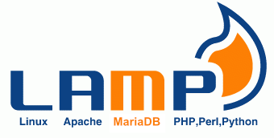

Systèmes · Linux
Serveur LAMP sous Linux
Mise en place d’un environnement serveur LAMP sous Linux avec Apache, MySQL et PHP.

Description
Le projet m'a permis de manipuler un environnement Linux et de comprendre la mise en place des différents services nécessaires à une application web.
J'ai travaillé sur l'installation, la configuration et la vérification du fonctionnement de l'environnement serveur.
Travail réalisé
- Installation de Linux et des outils
- Installation et configuration d’Apache
- Mise en place de MySQL
- Configuration de PHP
- Tests d’accès au service web
- Compréhension des échanges client/serveur
Apprentissages critiques mobilisés
Ces apprentissages critiques sont ceux que je peux illustrer à travers ce projet. Ils sont également reliés aux autres projets dans la page Compétences.
Installation et configuration de l’environnement Linux.
Compréhension de la communication entre le client et les services.
Mise en œuvre d’un service web avec Apache.
Utilisation d’un environnement de travail adapté à la mise en place du serveur.
Preuve de progression
Je connaissais les commandes Linux de base et quelques notions de réseau.
J'ai appris à mettre en place un environnement serveur complet et à comprendre le rôle de chaque service dans une architecture web.
Mobiliser ces connaissances dans un projet concret, expliquer mes choix techniques et produire une solution fonctionnelle adaptée au problème posé.